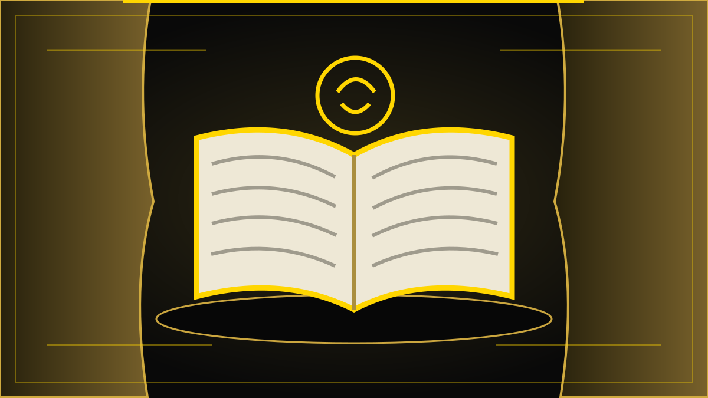

REDAKSJONELT UTKAST – IKKE PUBLISERT
Kultur · Planlagt fredag 30. oktober 2026
15 millioner til Ibsen i folkebibliotekene
Regjeringen vil bruke 15 millioner kroner på formidling av Henrik Ibsens dramatikk i biblioteker over hele landet. Pengene skal støtte samarbeid fram mot 200-årsjubileet i 2028, men selve ordningen er ennå ikke detaljert.

Et jubileum som skal ut til folk
Henrik Ibsen ble født i Skien 20. mars 1828. Når det i 2028 er gått 200 år siden fødselen, skal forfatterskapet markeres både i Norge og internasjonalt. Regjeringen varslet onsdag 28. oktober at 15 millioner kroner settes av til formidling av Ibsen i folkebibliotekene.
Nyheten gjelder ikke én enkelt teaterforestilling eller ett nasjonalt museumsprosjekt. Pengene er ment å bidra til lokale og regionale samarbeid der folkebibliotekene arbeider sammen med andre kulturaktører. Bibliotekene blir dermed en sentral arena for jubileet utenfor de store scenene.
Hvor kommer pengene fra?
Midler til satsingen skal komme fra spillemidlene og inngå i prosjekt- og utviklingsmidlene som forvaltes av Nasjonalbiblioteket. Departementet opplyser at mesteparten vil bli lyst ut i 2027. Detaljene om hvem som kan søke, hvilke aktiviteter som prioriteres og hvordan pengene skal fordeles, skal Nasjonalbiblioteket komme tilbake til.
Det er derfor for tidlig å oppgi bestemte bibliotek, festivaler eller teatergrupper som mottakere. Beløpet er avsatt til formålet, men tildelingene er ennå ikke konkretisert.
Hva kan en bibliotekmarkering være?
Folkebibliotekene har både samlinger og lokaler for arrangementer. De kan legge til rette for lesesirkler, diskusjoner, høytlesning, foredrag og samarbeid med scenekunstmiljøer. Slike muligheter er eksempler på formidling, ikke en liste over tiltak som allerede er vedtatt i den nye ordningen.
Den offisielle markeringen Ibsen 200 ledes av Nasjonalbiblioteket. Arbeidet omfatter samarbeid med nasjonale og internasjonale aktører, og den offisielle åpningen er etter planen lagt til Skien 20. mars 2028. Fylkesbiblioteker har allerede begynt å invitere kulturaktører til idéutvikling.
En dramatiker som fortsatt diskuteres
Ibsens stykker leses og oppføres fortsatt i mange land. Konfliktene i Et dukkehjem og En folkefiende handler blant annet om familiens forventninger, sannhet, samfunnspress og hvem som får definere hva som er riktig. Dramatikken kan også oppleves krevende for nye lesere. Nettopp derfor kan formidling ha betydning: Det kan være lettere å bli kjent med et skuespill gjennom en samtale eller en framføring enn gjennom teksten alene.
Det er likevel ikke gitt at et jubileum automatisk skaper varig leseinteresse. Hvor godt satsingen lykkes, vil blant annet avhenge av hvilke aktiviteter som faktisk gjennomføres, hvem de når, og om folk også bruker bibliotekene etter jubileumsåret.
Hva blir det neste steget?
Nasjonalbiblioteket skal konkretisere innretningen av tilskuddene. Når søknadsordningen og kriteriene er kjent, blir det mulig å undersøke hvilke deler av landet som får tilbud, hvilke samarbeid som dannes, og hvordan midlene fordeles.
Foreløpig er nyheten et økonomisk og organisatorisk løft for bibliotekformidling. Den egentlige testen vil være om jubileet gjør Ibsen tilgjengelig også for mennesker som ikke allerede oppsøker dramatikken.